Israël
מדינת ישראל
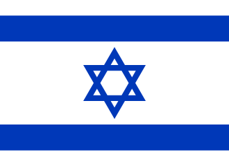
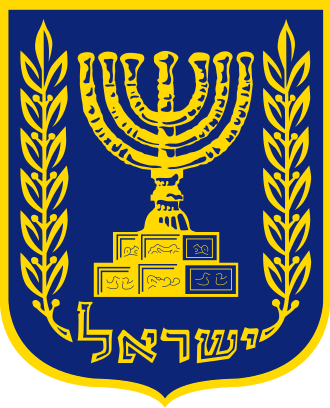
| Hoofdstad | Jeruzalem |
| Grootste stad | Jeruzalem |
| Talen | Hebreeuws, Arabisch |
| Werelddeel | Azië (Midden-Oosten) |
| Oppervlakte | 22.145 km² |
| Inwoners | ± 9,9 miljoen |
| Munteenheid | Sjekel (₪) |
| Staatshoofd | President |
| Regeringsleider | Minister-president |
| Onafhankelijk | 14 mei 1948 |
| Volkslied | Hatikwa (De Hoop) |
| Tijdzone | UTC+2 |
| Rijdt aan | Rechterkant |
Israël (Hebreeuws: יִשְׂרָאֵל) is een klein land in het Midden-Oosten. Het ligt in het werelddeel Azië, aan de oostkant van de Middellandse Zee. Israël is een heel bijzonder land, want het is belangrijk voor drie grote godsdiensten: het jodendom, het christendom en de islam.
Hoewel Israël een klein land is (veel kleiner dan Nederland!), is er heel veel te zien en te beleven. Je vindt er woestijnen, bergen, stranden, en oude steden. Het land heeft een lange en spannende geschiedenis die duizenden jaren teruggaat.
In Israël wonen ongeveer 9,9 miljoen mensen. De mensen die in Israël wonen komen uit veel verschillende landen van de wereld. Daardoor is het een land met veel verschillende culturen en tradities.
Geografie
Waar ligt Israël?
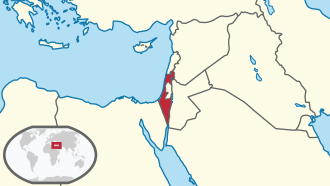
Israël ligt in het Midden-Oosten, een gebied in het zuidwesten van Azië. Het land grenst aan vier andere landen:
- Libanon in het noorden
- Syrië in het noordoosten
- Jordanië in het oosten
- Egypte in het zuidwesten
Aan de westkant van Israël ligt de Middellandse Zee. In het zuiden heeft het land een klein stukje kust aan de Rode Zee, bij de stad Eilat. Israël ligt dus tussen twee zeeën!
Het land ligt ook dicht bij andere werelddelen. Afrika is heel dichtbij (Egypte is in Afrika) en Europa is ook niet zo ver weg. Daarom wordt het Midden-Oosten soms een "kruispunt van de wereld" genoemd.
Landschap
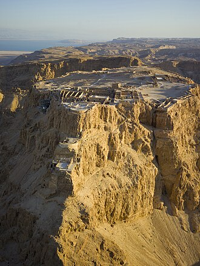
Voor zo'n klein land heeft Israël heel veel verschillende landschappen. Dit maakt het land extra bijzonder:
- Kustgebied – Langs de Middellandse Zee is een lange, smalle strook met stranden en vlak land. Hier wonen de meeste mensen.
- Bergen en heuvels – In het midden en noorden van het land zijn bergen en groene heuvels. Het hoogste punt is de berg Hermon (2.236 meter hoog!). In de winter kan daar zelfs sneeuw vallen.
- De Jordaanvallei – Dit is een diep dal in het oosten. De rivier de Jordaan stroomt hier doorheen, van het Meer van Galilea naar de Dode Zee.
- De Negev-woestijn – Het hele zuiden van Israël is woestijn. Het is er heel droog en warm. Toch wonen er ook mensen en zijn er zelfs steden.
- De Dode Zee – Dit is het laagste punt op de hele aarde! Het ligt 430 meter onder de zeespiegel.
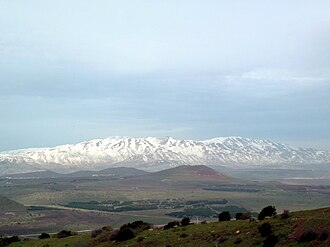
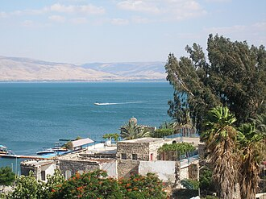
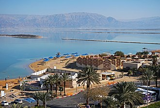
Klimaat
Het klimaat in Israël is heel anders dan in Nederland. Er zijn eigenlijk maar twee seizoenen:
| Seizoen | Maanden | Hoe is het weer? |
|---|---|---|
| Zomer | April – Oktober | Heel warm en droog. In de woestijn kan het wel 45°C worden! Aan de kust is het rond 30°C. Het regent bijna nooit. |
| Winter | November – Maart | Koeler en nat. Het regent regelmatig. In Jeruzalem kan het soms sneeuwen! Aan de kust is het rond 15°C. |
In Nederland regent het het hele jaar door, maar in Israël regent het bijna alleen in de winter. Daarom is water heel belangrijk in Israël. De Israëliërs hebben slimme manieren bedacht om zuinig met water om te gaan (zie ook: Uitvindingen).
Steden
Israël heeft een aantal grote en belangrijke steden:
- Jeruzalem – De hoofdstad en de heiligste stad. Hier staan veel oude gebouwen en heilige plekken. Er wonen ongeveer 950.000 mensen.
- Tel Aviv – De modernste en grootste stad van Israël (samen met Jaffa). Dit is de stad waar het meeste bedrijfsleven is. Er wonen ongeveer 460.000 mensen, maar in het hele gebied eromheen meer dan 4 miljoen!
- Haifa – Een grote havenstad in het noorden, aan de Middellandse Zee. Hier staat ook de berg Karmel.
- Be'er Sjeva – De grootste stad in de Negev-woestijn. Het wordt ook wel de "hoofdstad van de Negev" genoemd.
- Eilat – Een vakantiestad helemaal in het zuiden, aan de Rode Zee.
Natuur en dieren
Ondanks dat het een klein land is, leven er veel bijzondere dieren in Israël:
- Steenbokken (ibex) – Deze mooie berggeiten leven in de woestijn. Je kunt ze goed zien bij Ein Gedi, bij de Dode Zee.
- Flamingo's – In de winter komen er flamingo's naar Israël.
- Trekvogels – Israël ligt op de route van miljoenen vogels die elk jaar van Europa naar Afrika vliegen en terug. In het Hula-dal kun je dit spectakel zien.
- Gazellen – Deze snelle dieren leven in het hele land.
- Koraalvissen – In de Rode Zee bij Eilat zwemmen prachtige kleurrijke vissen.
Israël doet veel aan natuurbescherming. Er zijn meer dan 60 natuurreservaten in het land. Er is zelfs een speciaal programma om dieren die vroeger in het land leefden, maar verdwenen waren, terug te brengen.
Cultuur
Taal
In Israël spreken de meeste mensen Hebreeuws (Ivriet). Dit is een hele bijzondere taal! Hebreeuws was duizenden jaren lang een "dode taal" – dat betekent dat niemand het meer als gewone taal sprak. Het werd alleen nog gebruikt voor bidden en in religieuze boeken.
Aan het einde van de 19e eeuw heeft een man genaamd Eliëzer Ben-Jehoeda het Hebreeuws weer tot leven gebracht. Hij bedacht nieuwe woorden voor moderne dingen (zoals "ijs" en "krant") en sprak alleen maar Hebreeuws met zijn zoon. Langzaam gingen steeds meer mensen het spreken.
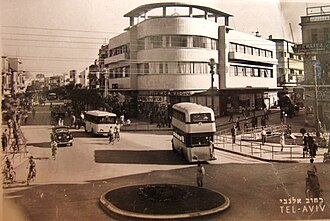
Hebreeuws schrijf je van rechts naar links (andersom dan Nederlands!). Het alfabet ziet er heel anders uit. Hier zijn een paar voorbeelden:
| Nederlands | Hebreeuws | Hoe spreek je het uit? |
|---|---|---|
| Hallo / Vrede | שלום | Sjalom |
| Dank je wel | תודה | Toda |
| Ja | כן | Ken |
| Nee | לא | Lo |
| School | בית ספר | Beet sefer |
| Vriend | חבר | Chaver |
| Boek | ספר | Sefer |
| Water | מים | Majim |
Arabisch is de tweede belangrijke taal. Ongeveer 20% van de bevolking in Israël is Arabisch. Op verkeersborden staan de namen in drie talen: Hebreeuws, Arabisch en Engels.
Omdat de mensen in Israël uit de hele wereld zijn gekomen, hoor je op straat ook veel andere talen, zoals Russisch, Amhaars (uit Ethiopië), Frans en Engels.
Godsdienst
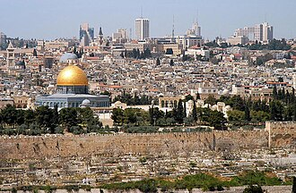
Israël is een heel belangrijk land voor religie. Het is het heilige land voor drie grote godsdiensten:
- Jodendom – Israël is het thuisland van het Joodse volk. De meeste inwoners (ongeveer 74%) zijn Joods. Belangrijke heilige plekken zijn de Klaagmuur (Westelijke Muur) en de Tempelberg in Jeruzalem.
- Christendom – Christenen geloven dat Jezus in Israël is geboren (in Bethlehem) en geleefd heeft. De Heilig Grafkerk in Jeruzalem is een van de heiligste plekken voor christenen.
- Islam – Moslims geloven dat de profeet Mohammed vanuit Jeruzalem naar de hemel is gegaan. De Al-Aqsa-moskee en de Rotskoepel op de Tempelberg zijn heel belangrijk voor moslims.
In Israël wonen ook Druzen, Bahai's en mensen van andere geloven. Er zijn ook veel mensen die niet religieus zijn.
De Joodse rustdag is de sjabbat. Die begint op vrijdagavond als de zon ondergaat en eindigt op zaterdagavond. Tijdens sjabbat stoppen veel mensen met werken. In sommige steden rijden er dan geen bussen.
Onderwijs
Kinderen in Israël gaan naar school vanaf 3 jaar (kleuterschool) en de leerplicht is tot 18 jaar. Dit is hoe het schoolsysteem werkt:
- Basisschool (Beet Sefer Yesodi) – van groep 1 tot groep 6 (leeftijd 6-12 jaar)
- Onderbouw middelbare school (Chatichon) – 3 jaar (leeftijd 12-15)
- Bovenbouw middelbare school (Tichon) – 3 jaar (leeftijd 15-18)
Israëlische kinderen gaan van zondag tot en met vrijdag naar school. Ja, ook op zondag! De vrije dag is zaterdag (sjabbat). Op vrijdag is de schooldag korter.
Er zijn verschillende soorten scholen: gewone staatsscholen, religieuze Joodse scholen, Arabische scholen, en privéscholen. Alle kinderen leren Hebreeuws, Engels, wiskunde, wetenschap en nog veel meer.
Na de middelbare school gaan de meeste jonge Israëliërs naar het leger (het IDF). Jongens dienen meestal 2 jaar en 8 maanden, en meisjes 2 jaar. Daarna gaan veel mensen reizen of studeren aan de universiteit.
Feestdagen
Israël heeft veel bijzondere feestdagen. De meeste feestdagen zijn Joods en volgen de Joodse kalender (die is anders dan onze kalender). Hier zijn de belangrijkste:
| Feestdag | Wanneer (ongeveer) | Wat vier je? |
|---|---|---|
| Rosj Hasjana | September/Oktober | Joods Nieuwjaar. Mensen eten appel met honing voor een zoet nieuw jaar. |
| Jom Kipoer | September/Oktober | Grote Verzoendag. De heiligste dag van het jaar. Iedereen vast (eet niet). Het hele land staat stil – zelfs geen auto's op de weg! Kinderen fietsen op de lege snelwegen. |
| Soekot | Oktober | Loofhuttenfeest. Mensen bouwen een hutje (soeka) en eten daarin. |
| Chanoeka | December | Lichtfeest. Acht dagen lang steek je elke avond een kaarsje meer aan in een speciale kandelaar (chanoekia). Kinderen krijgen geld en snoep. |
| Poeriem | Maart | Een soort carnaval! Kinderen verkleden zich en iedereen eet driehoekige koekjes (hamantasjen). |
| Pesach | April | Paasfeest. Herdenkt dat de Joden uit Egypte zijn bevrijd. Een week lang eet je geen brood, maar matze (plat, ongerezen brood). |
| Jom Ha'atsmaoet | April/Mei | Onafhankelijkheidsdag van Israël (sinds 1948). Groot feest met vuurwerk en barbecues! |
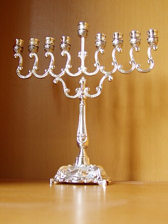
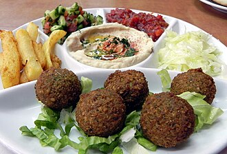
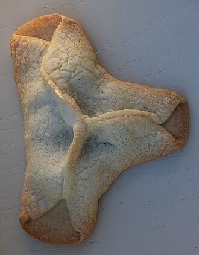
Eten en drinken
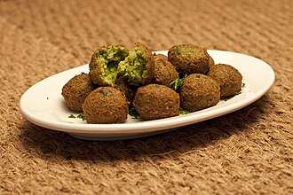
Het eten in Israël is heerlijk en heel gevarieerd! Omdat de mensen uit zoveel verschillende landen komen, vind je eten uit de hele wereld. Hier zijn de bekendste gerechten:
- Falafel – Gefrituurde balletjes van kikkererwten, geserveerd in een pitabroodje met salade en saus. Dit is misschien wel het beroemdste eten van Israël!
- Hummus – Een romige dip gemaakt van kikkererwten, tahini (sesampasta), citroen en knoflook. Israëliërs eten het bij bijna alles.
- Shakshuka – Eieren gepocheerd in een saus van tomaten en paprika. Heel lekker voor ontbijt!
- Pita – Rond, plat brood met een "zakje" erin waar je dingen in kunt stoppen.
- Israëlische salade – Heel fijn gesneden komkommer en tomaat, met olijfolie en citroen.
- Sabich – Een pitabroodje met gebakken aubergine, ei, hummus en salade.
- Halva – Een zoet snoep gemaakt van sesampasta.
Veel Joodse mensen eten koosjer. Dat betekent dat ze bepaalde regels volgen over wat ze wel en niet mogen eten. Zo mogen ze geen varkensvlees eten en geen melk en vlees tegelijk eten.
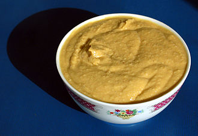
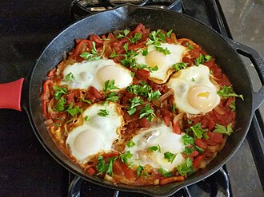
Muziek en dans
Israël heeft een levendige muziekcultuur. Er is van alles te horen: popmuziek, rockmuziek, hiphop, maar ook traditionele Joodse en Arabische muziek.
Israël doet elk jaar mee aan het Eurovisie Songfestival (ook al ligt het in Azië!). Het land heeft het festival al vier keer gewonnen. In 2019 werd het Songfestival in Tel Aviv gehouden.
Een bekende traditionele dans is de Hora. Dit is een rondedans die vaak gedanst wordt op feesten en bruiloften. Iedereen houdt elkaars handen vast en danst in een kring.
Geschiedenis
Heel lang geleden
Het gebied waar nu Israël ligt, heeft een hele lange geschiedenis. Het is een van de oudste bewoonde gebieden ter wereld!
- Ongeveer 3.000 jaar geleden – Volgens de Bijbel stichtte koning David het Koninkrijk Israël met Jeruzalem als hoofdstad. Zijn zoon Salomo bouwde de eerste Tempel in Jeruzalem.
- Ongeveer 2.500 jaar geleden – Het Babylonische rijk veroverde Jeruzalem en verwoestte de Tempel. Later werd een tweede Tempel gebouwd.
- Ongeveer 2.000 jaar geleden – De Romeinen heersten over het gebied. Ze noemden het "Palestina". In het jaar 70 verwoestten de Romeinen de tweede Tempel. Alleen de westelijke muur bleef staan – dit is nu de Klaagmuur.
Joden verspreid over de wereld
Na de verwoesting van de Tempel werden de meeste Joden verdreven uit hun land. Ze gingen wonen in Europa, Noord-Afrika, het Midden-Oosten en later ook in Amerika. Dit wordt de diaspora genoemd (verspreiding).
Hoewel ze over de hele wereld woonden, bleven de Joden dromen van terugkeer naar hun oude land. Elk jaar met Pesach zeiden ze: "Volgend jaar in Jeruzalem!"
Ondertussen werd het gebied bestuurd door verschillende rijken: Arabieren, Kruisvaarders, het Ottomaanse Rijk (Turken), en uiteindelijk de Britten.
Terugkeer naar het land
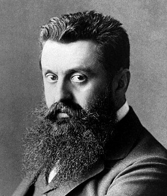
Aan het einde van de 19e eeuw (rond 1880-1900) begonnen steeds meer Joden terug te verhuizen naar het gebied. Dit werd de Zionistische beweging genoemd. Theodor Herzl was een van de belangrijkste leiders van deze beweging. Hij schreef een boek waarin hij zei dat de Joden een eigen land nodig hadden.
De Joden die terugkwamen, bouwden dorpen en steden. Ze maakten de woestijn groen door bomen te planten en landbouw te ontwikkelen. In 1909 werd de stad Tel Aviv gesticht.
Tijdens de Tweede Wereldoorlog (1939-1945) werden zes miljoen Joden vermoord door de nazi's in Duitsland. Dit wordt de Holocaust (of Sjoa) genoemd. Dit verschrikkelijke gebeurtenis maakte de wens voor een eigen land nog sterker.
De staat Israël
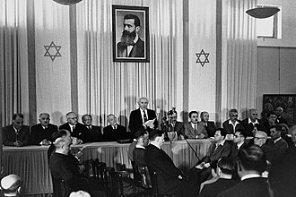
Op 14 mei 1948 riep David Ben-Goerion de onafhankelijkheid uit van de staat Israël. Hij werd de eerste minister-president. Dit is een van de belangrijkste momenten in de Joodse geschiedenis.
Meteen na de oprichting vielen de buurlanden Israël aan. Er volgde een oorlog, maar Israël bleef bestaan. In de jaren daarna zijn er meerdere oorlogen geweest tussen Israël en de buurlanden.
Belangrijke momenten na 1948:
- 1948-1950 – Honderdduizenden Joden uit de hele wereld kwamen naar Israël. De bevolking verdubbelde in twee jaar!
- 1967 – De Zesdaagse Oorlog. Israël veroverde onder andere Oost-Jeruzalem, inclusief de Klaagmuur.
- 1979 – Israël tekende een vredesakkoord met Egypte. Dit was de eerste vrede met een buurland.
- 1994 – Vredesakkoord met Jordanië.
Israël nu
Vandaag de dag is Israël een modern land met een sterke economie. Het staat bekend om technologie en innovatie (het wordt soms "Start-up Nation" genoemd). Tegelijkertijd zijn er nog steeds spanningen en conflicten in de regio.
Israël blijft een land waar mensen uit de hele wereld naartoe komen om er te wonen, te werken, of om de heilige plekken te bezoeken.
Bezienswaardigheden
Jeruzalem
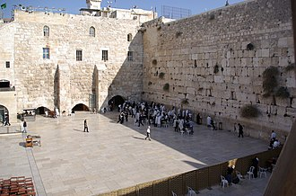
Jeruzalem is de hoofdstad van Israël en een van de oudste steden ter wereld. De stad is meer dan 3.000 jaar oud! Het meest bijzondere deel is de Oude Stad, die omringd is door een grote, oude muur.
De Oude Stad is verdeeld in vier wijken:
- De Joodse wijk – met de Klaagmuur (Westelijke Muur)
- De Moslimwijk – met de Rotskoepel en Al-Aqsa-moskee
- De Christelijke wijk – met de Heilig Grafkerk
- De Armeense wijk – de kleinste wijk
Buiten de Oude Stad vind je het Yad Vashem (het Holocaustmuseum), het Israël Museum (waar de Dode Zeerollen worden bewaard), en de Mahane Yehuda markt – een kleurrijke markt met heerlijk eten.
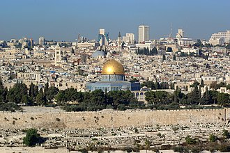
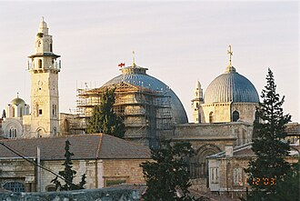
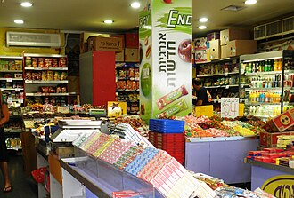
Tel Aviv
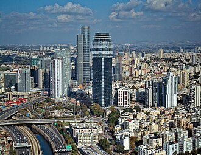
Tel Aviv is de modernste stad van Israël. Het is een jonge stad – pas gesticht in 1909! Het ligt aan de Middellandse Zee en heeft mooie stranden.
Leuke dingen in Tel Aviv:
- De stranden – Tel Aviv heeft kilometers aan zandstranden langs de zee.
- De Witte Stad – Een deel van Tel Aviv met meer dan 4.000 witte gebouwen in Bauhaus-stijl. Het staat op de UNESCO Werelderfgoedlijst!
- Oude Jaffa – Het oude deel van de stad, met smalle straatjes, galerieën en een oude haven. Jaffa is duizenden jaren oud.
- De Karmelmarkt (Shuk HaCarmel) – Een grote, drukke markt met fruit, groente, specerijen, kleding en nog veel meer.
- Nachtleven – Tel Aviv staat bekend als een stad die nooit slaapt.
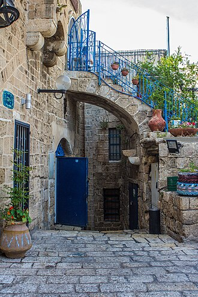
De Dode Zee
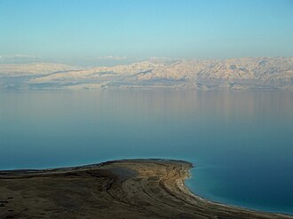
De Dode Zee is een van de bijzonderste plekken op aarde. Het is eigenlijk een heel groot meer aan de grens van Israël en Jordanië. Bijzondere feiten:
- Het is het laagste punt op aarde: 430 meter onder de zeespiegel.
- Het water is 10 keer zouter dan de oceaan. Daardoor kun je er niet in zinken – je drijft vanzelf!
- Er leven geen vissen in het water (daarom heet het de "Dode" Zee).
- De modder van de Dode Zee is goed voor je huid. Veel mensen smeren zichzelf ermee in.
- De Dode Zee wordt steeds kleiner. Elk jaar daalt het waterpeil. Wetenschappers maken zich hier zorgen over.
In de buurt van de Dode Zee vind je ook Masada – een oude vesting op een hoge rots. Je kunt er naartoe met een kabelbaan of door naar boven te klimmen. Het is een UNESCO Werelderfgoed.
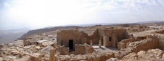
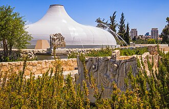
Eilat en de Rode Zee
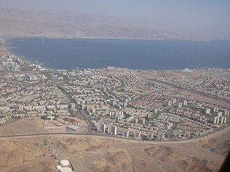
Eilat is een populaire vakantiestad helemaal in het zuiden van Israël. Het ligt aan de Rode Zee en het is er het hele jaar door warm. Toeristen komen hier voor:
- De prachtige koraalriffen – je kunt snorkelen en duiken tussen kleurrijke koralen en tropische vissen.
- Het Onderwaterobservatorium – een gebouw onder water waar je vissen en haaien kunt bekijken.
- De Dolfijnenrif – een plek waar je kunt zwemmen met dolfijnen.
- Woestijnwandelingen – de woestijn rondom Eilat heeft mooie rode rotsen en canyons.
Meer plekken om te bezoeken
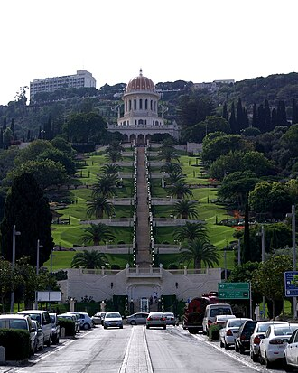
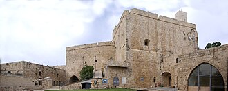
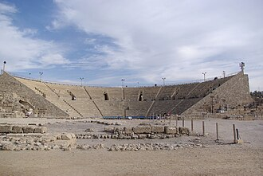
- Het Meer van Galilea (Kinneret) – Het grootste zoetwatermeer van Israël, in het noorden. Belangrijk in de christelijke geschiedenis.
- Haifa en de Bahai-tuinen – Prachtige, trapvormige tuinen op de berg Karmel. UNESCO Werelderfgoed.
- Akko (Acre) – Een oude havenstad met een ondergrondse kruisvaardersburcht. Ook UNESCO Werelderfgoed.
- Nazareth – De stad waar Jezus is opgegroeid, volgens de christelijke traditie.
- De Golanhoogten – Groene heuvels in het noordoosten met watervallen en natuur.
- Makhtesh Ramon – Een enorme krater in de Negev-woestijn. Het is de grootste krater ter wereld!
- Caesarea – Oude Romeinse stad aan de kust met een theater en aquaduct.
Sport
Sport is heel populair in Israël. De populairste sporten zijn:
- Voetbal – Net als in Nederland is voetbal de populairste sport. Bekende clubs zijn Maccabi Haifa, Hapoel Be'er Sjeva en Maccabi Tel Aviv.
- Basketbal – Maccabi Tel Aviv is een van de beste basketbalteams van Europa en heeft meerdere keren de EuroLeague gewonnen.
- Zwemmen – Israël heeft veel goede zwemmers.
- Judo – Israël heeft olympische medailles gewonnen met judo!
- Krav Maga – Een zelfverdedigingssport die in Israël is uitgevonden. Het wordt nu over de hele wereld beoefend.
Israël doet mee aan de Olympische Spelen en aan Europese sportcompetities, ook al ligt het land in Azië.
Uitvindingen en technologie
Israël staat bekend als het "Start-up Nation" omdat er heel veel technologiebedrijven zijn. Israëliërs hebben veel dingen uitgevonden die over de hele wereld worden gebruikt:
- Druppelirrigatie – Een slimme manier om planten water te geven met heel weinig water. Kleine druppels water gaan precies naar de wortels van de plant. Dit helpt om gewassen te laten groeien in de woestijn!
- USB-stick – De USB-flashdrive die je gebruikt om bestanden op te slaan, is uitgevonden in Israël.
- Cherry tomaat – De kleine, zoete tomaatjes die je in de supermarkt koopt, zijn ontwikkeld door Israëlische wetenschappers.
- Waze – De navigatie-app die je ouders misschien in de auto gebruiken, is gemaakt in Israël.
- IJzeren Koepel – Een verdedigingssysteem dat raketten uit de lucht kan halen.
- Waterontzilting – Israël is een wereldleider in het omzetten van zeewater in drinkwater.
Wetenswaardigheden
Hier zijn nog een paar leuke en interessante feiten over Israël:
- De Israëlische vlag is wit met twee blauwe strepen en een blauwe Davidster (Magen David) in het midden.
- Het volkslied van Israël heet "Hatikwa", wat "De Hoop" betekent.
- Israël is het enige land ter wereld dat is begonnen met meer woestijn dan groen land, en waar nu meer bomen staan dan 100 jaar geleden.
- De stad Jericho, vlakbij Israël, is misschien wel de oudste stad ter wereld (meer dan 10.000 jaar oud).
- In Israël lees je boeken van achteren naar voren (omdat Hebreeuws van rechts naar links gaat).
- De Dode Zeerollen zijn heel oude documenten die in 1947 werden gevonden in grotten bij de Dode Zee. Ze zijn meer dan 2.000 jaar oud!
- Israël heeft meer musea per inwoner dan enig ander land ter wereld.
- Het nationale symbool van Israël is de Menora – een kandelaar met zeven armen.
- In Israël is de werkweek van zondag tot donderdag of vrijdagmiddag. Het weekend is op vrijdagmiddag en zaterdag.
- Israëliërs eten gemiddeld meer fruit en groente per persoon dan bijna alle andere landen.